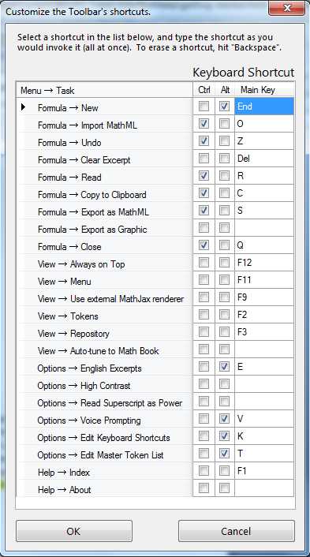
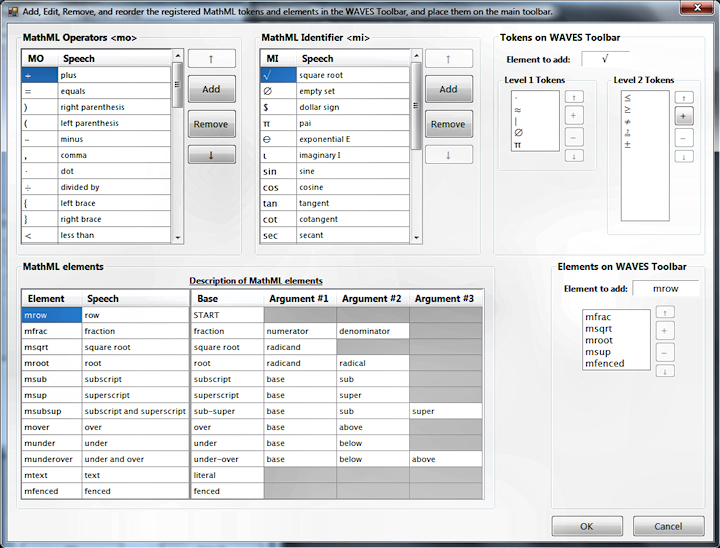

The WAVES Toolbar supports two primary means of customization. The keyboard shortcuts used to access various commands in the software are fully editable and can be reassigned to fit your specific keyboard setup and ergonomic preferences. The Master Token list is also editable, although this is recommended for advanced users who have had time to get used to the other functions of the WAVES Toolbar.

The Edit Keyboard Shortcuts window displays a list of all the commands and functions in the WAVES Toolbar software. You can assign key commands (without or with Alt and/or Ctrl) to any of these functions. To assign a key combination, click on the function's line in the list, and then press the key combination you would like to use to access that function. Note that some Alt and Ctrl key combinations are reserved for use by Windows or your computer, and may thus be unavailable for use by the WAVES Toolbar (if you try to assign a reserved key combination, an error sound will play). To remove a shortcut from a command, press the Backspace key.

The initial Token Repository (accessed by pressing F3) contains a large selection of additional tokens that can be used in the Formula List, added to the toolbar, or accessed via hotkeys. The default selection of token buttons can also be expanded to include Level 2 tokens (i.e., tokens that are commonly used, but less frequently than the default Level 1 tokens). Advanced users may, however, customize the tokens and their availability.
The Edit Master Token List window allows a wide range of modifications to token behavior. Tokens can be assigned to different Levels, added and removed from the toolbar, and voiced in different ways. Users familiar with MathML can even change the way tokens interact with the MathML renderer. Care is advised in making changes in this window; only advanced users should attempt to modify token behavior.